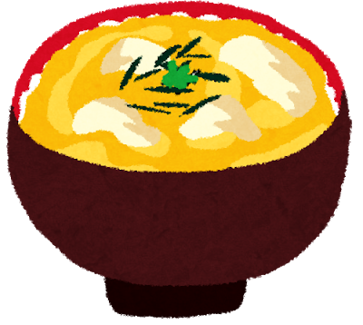
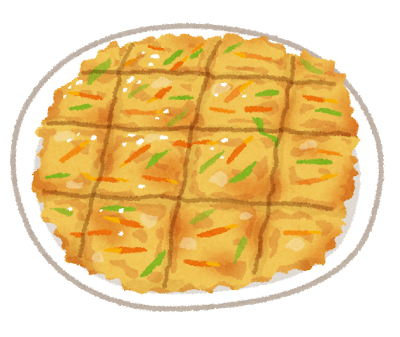
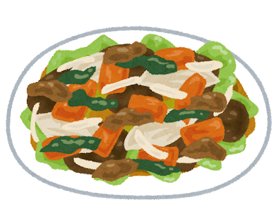

すべてのレシピ (50音順)
-
味玉
材料
卵
漬けダレ：しょうゆとみりん 1:1、砂糖・だし・だし醤油 少し作り方
・半熟ゆで卵を作る。
・レンジOKのタッパーやチャック付き袋に漬けダレの材料を全部入れて、軽くチンして冷ます。
・表面の水をしっかり拭き取って、卵をタレにつける。
・一晩つけて、完成。 -
あったか豆腐
材料
豆腐：3パック入りの絹美人 1パック
塩、味の素、鶏ガラスープの素、ごま油、生しょうゆ、お酢、万能ねぎ
作り方
・豆腐をおわんに出して、爆発しないように軽くほぐしてチンする。
・ボウルに、切ったニラと卵、塩、味の素、鶏ガラスープの素を入れて、軽く混ぜる。
・塩、味の素、鶏がらスープの素を少しずつふって、ごま油少し、生しょうゆを2〜3周、お酢をほんの少しかける。
・軽く混ぜて味を見たら、万能ねぎをかけて、完成。スプーンで混ぜながら食べる。 -
お好み焼き

材料
生地：薄力粉 200cc、片栗粉 40cc、卵 1個、水 150~170cc
BP・だし・塩・砂糖 すこし
具：キャベツ、天かす、チーズ
えびとイカ/明太子とマヨネーズ
トッピング：ソース、マヨネーズ、あおさ、かつおぶし
油：サラダ油（、オリーブオイル）作り方
・ボウルに生地の材料を全部入れてダマがなくなるまで混ぜて、冷蔵庫に入れておく。
ボウルの中に置いた計量カップいっぱいに薄力粉を入れて、その上に山盛りになるくらいまで片栗粉を足せばOK。
具から水分が出るので水を入れすぎないように。
・まな板を出して、キャベツと入れたい具を切る。
・明太子…マヨネーズと混ぜて、たくさんあれば、6割を生地に混ぜて、残りの4割を焼くときに生地の表面に塗る。
・えび…小さく切って生地に混ぜる。
・イカ…輪切りにして、焼くときに生地の表面に並べる。
・生地を冷蔵庫から出して、混ぜる具を入れて混ぜる。
・フライパンに油を入れて火をつけて 熱くなったら生地を入れて、ヘラでまんべんなく伸ばす。
熱くなったら生地を入れて、ヘラでまんべんなく伸ばす。
載せる具があれば、ここで、まだ焼けていない表面に並べる。
・焼き色がついたら、フライパンを水平方向に回して生地が回ることを確認してからひっくり返す。
・火を少し弱くして蓋をして、焦げそうになるか3分経つかのどちらか早い方まで焼く。
焼き色が足りなかったら、蓋を取ったあとに少し火を強くしてもう少し焼く。
・もう一度ひっくり返して、火をかなり弱くする。
・ヘラで8等分に切って、中が生でないことを確認したら、ソースとマヨネーズを一方方向にかける。
今かけたソースとマヨネーズを、かけた方向に対して垂直にお箸で伸ばして模様をつける。
火を止めて あおさとかつおぶしをふりかけて、世界一おいしいお好み焼き、完成。
あおさとかつおぶしをふりかけて、世界一おいしいお好み焼き、完成。
・ちなみに、洋風にしたいときは、焼くときに油にオリーブオイルを少し混ぜて、あおさの代わりにパセリをかけると、
味がマイルドになっておいしい。 -
オムライス

材料
オム：卵、豆乳、塩、砂糖
ライス：白米、小さめのきのこ、ハム、コンソメ、鶏ガラスープの素
調味料：塩、味の素、鶏ガラスープの素、酒
油：サラダ油、バター ケチャップ作り方
・ライスの具を細かく切ったら、油をあたためたフライパンにライスの材料を全部入れて炒める。
できたら、火を止めて一旦お皿に出す。
・ボウルに卵液を作り、ほどよく混ぜる。
・キッチンペーパーでフライパンの汚れを軽くふいて、再び油を温めたフライパンでオムを焼く。
・さっきお皿に出したご飯を丸いオムの真ん中において、端を整えたら、
火を止めて今のお皿を逆さまに当ててひっくり返す。
・ケチャップなどをかけて、完成。親子丼
材料
親：鶏胸肉 1枚か、ささみ 3〜4本、塩こしょう、酒
子：卵 2個
玉ねぎ 1個
調味料：しょうゆ・みりん2、酒・砂糖1、だし 少し
作り方
・玉ねぎを切る。つなよしパパはシャキ玉が大嫌いなので、念のためにチン。
・お肉の脂身や皮、筋をのぞいて、食べる大きさに切ったら、塩こしょう、酒。
・深めのフライパンにお湯を少し沸かして 沸いたら調味料と玉ねぎを入れる。
沸いたら調味料と玉ねぎを入れる。
・しばらくしたら、火を少し弱めてお肉も入れる。この間に、ボウルで溶き卵を用意。
・全体に火が通ったら、火を強くして、卵を一周かける。
お箸を、ボウルの縁に対して垂直に接するように固定しながらやると、卵の量が調節できて良い。
・主に白身を軽く混ぜて、白身が固まってきたら火を止めて完成。
 牛丼
牛丼材料
牛肉 薄切り、玉ねぎ
鎌田のだし醤油1、しょうゆ・酒・砂糖3、みりん2、だし、生姜パウダー作り方
・玉ねぎを薄く切る。つなよしパパはシャキ玉が大嫌いなので、念のためにチン。
・深めのフライパンに、十分具材が浸るくらいの水と、調味料を全部入れて、沸いたら玉ねぎを入れる。
・しばらくしたら牛肉を入れて、15分。
・味を見て、よければ火を止めて完成。しょうゆ味が足りなかったら生しょうゆで調整。
キュウリと卵の炒め
材料
キュウリ
卵、塩、酒
調味料：塩、味の素、鶏がらスープの素、ホタテだし
油：サラダ油作り方
・キュウリを斜め薄切りの半分に切る。
・卵をボウルに溶いて、塩、味の素で味付け。ふんわりさせるために卵液が緩くならない程度に酒を少し入れる。
・熱くしたフライパンに油を多めに入れて、煙が出る手前で卵液を全部入れて、ふんわり炒める。
詳しくはニラ玉参照。
・卵ができたら一旦お皿に取り出して、今度はキュウリを炒める。火が通ったら、卵を戻して調味料で素早く味付け。
・軽く炒めたら、火を止めて完成。
栗ごはん

材料
むき栗
調味料：酒、みりん、鎌田のだし醤油、砂糖、黒ごま
白米、もち米作り方
・お菓子の甘栗、むき栗を、2種類くらいの大きさに切る。
・白米ともち米を5:1〜1:1の好きな割合でといで、炊飯器に合わせて水を入れる。
・栗と、酒、みりん、鎌田のだし醤油を少し入れて、炊く。
・炊けたら、味を見ながら砂糖を入れる。好みの甘さになったら、おわんに盛って、黒ごまをかけて、完成。 さっぱりキュウリ
さっぱりキュウリ
材料
キュウリ
a：ごま油、塩、味の素、お酢(+生しょうゆ、唐辛子、かつおぶし)
b：ごまみそ、お酢、塩、味の素
c：オリーブオイル、生しょうゆ、塩、味の素、お酢、唐辛子、かつおぶし作り方
・キュウリを食べる大きさに切る。a(+なし)とbのときは斜め薄切りの半分、a(+あり)とcのときは乱切りがおいしい。
・a、b、cどれかで味付けをして、完成。bはお酢多め、aとcはお酢は少しだけ。
cのときはミニトマトを半分に切って入れてもおいしい。
シーフードカレー

材料
ルー：別々のブランドの中辛と辛口/甘辛と辛口
具：じゃがいも、玉ねぎ、ブロッコリー
えび、イカ
塩こしょう、酒、鶏ガラスープの素、ホタテだし、ブラックチョコ、チーズ
油：サラダ油、オリーブオイル 気持ち作り方
・具を食べる大きさに切る。えびとイカには塩こしょう、酒。
・大きい深めのフライパンに切った野菜を入れて、火をつけてから油を十分にかける。
具が入ったあとなので、こうすると水気があっても油がひどくはねない。
・鶏がらスープの素をふりかけて、焦げないように気をつけて炒める。焼けてきたら、油を足してえびとイカも炒める。
・フライパンの6~7分目まで水かお湯を入れて、沸いたらほたてだしを入れる。
・焦げないように火を少し弱めて蓋をして20分。
・じゃがいもで火の通りを確認したら、火を弱めてルーを2種類入れる。
・チョコを数かけ入れて、ゆっくりかき混ぜながらルーも一緒に溶かす。
・最後にチーズを少し入れて、軽く溶かして混ぜたら、火を止めて完成。
・らっきょうの要領で、ヨーグルトやパイン（の缶詰）も実はよく合う。ステーキ
材料
お肉：600円/100g程度の牛モモ、岩塩、ブラックペッパー、酒
ソース：玉ねぎ、しょうゆ・酒3、みりん1、
鶏ガラスープの素、塩、砂糖、酢、バター
油：サラダ油作り方
・お肉をフォークでまんべんなく刺したあと、ふちに1.5cm間隔の切れ目を入れて、両面に塩こしょう。少しおく。
・フライパンにサラダ油をほんの少しひいて火をつけ熱くなったら、お肉を入れる。
必要ならキッチンペーパーで表面を軽く拭き取ってから。
・まもなく側面まで焼けてきたら、ひっくり返す。
料理酒を一周かけて、勢いがおさまった後火を少し弱めたら蓋をする。
・料理酒がなくなってきたら、火を強くして全部飛ばして、火を止める。
油を切れる状態でしばらく休ませる。
・洗うか別のフライパンにすりおろした玉ねぎとソースの材料を全部入れて、弱火で煮詰める。お酢は最後。
・お皿にお肉を出して、半分にはソースをかけて、半分は岩塩をかけて、完成。酢豚

材料
豚肉：ヒレブロック、切り落としなど、塩こしょう、しょうゆ、酒、片栗粉
野菜：ピーマン、玉ねぎ、なす、パインの缶詰
タレ：しょうゆ1、酒1、砂糖2、ケチャップ2、鶏ガラスープの素
お酢：穀物酢、黒酢 半々 サラダ油作り方
・豚肉を細めに切って、塩こしょう、しょうゆ、酒。時間があれば少し置く。水気をふいてから片栗粉をまぶす。
・野菜を全部切る。
・熱くしたフライパンに火をつけて油を入れる。
熱くなったら、まず野菜を全部入れて炒める。（パインはまだ）
・野菜に火が通ったら、フライパンの端に寄せて、空いたところに油を足してお肉を焼く。
・焼けたら、火を弱めてパインとタレを全部入れて、焦げないようにタレを全体に絡める。
お酢は長時間火にかけると味が変わるので、まだ入れない。
・そろそろ良さそうなところで、味を見ながらお酢を入れる
最後に火を戻して軽く炒めたら、火を止めて完成。
・火を止めた後、好みでラー油を絡めてもおいしい。チヂミ
材料
具：ニラ 1/2束、玉ねぎ 半分、チーズ
生地：薄力粉 70cc、片栗粉 30cc、水 100cc、卵 1個、鶏ガラスープの素、塩
油：サラダ油、ごま油 半々
タレ：お酢、しょうゆ、ラー油作り方
・生地の材料をボウルに入れて、ダマがなくなるまで混ぜる。
・ニラは3〜4cm、玉ねぎは薄く切って、具を全部生地に混ぜる。
具が多すぎたら粉と水を足して調節する。卵を足すと味が変わるので卵は足さない。
・熱くしたフライパンに油を入れて、焦がさないように両面焼いたら、火を止めて完成。
・ヘラで格子状に切って、好きなタレをつけて食べる。トマトと卵の炒め
材料
トマト
卵、塩、酒
調味料：塩、味の素、鶏がらスープの素、ホタテだし
油：サラダ油作り方
・トマトをくし切りに近い乱切りにする。
・卵をボウルに溶いて、塩、味の素で味付け。ふんわりさせるために卵液が緩くならない程度に酒を少し入れる。
・熱くしたフライパンに油を多めに入れて、煙が出る手前で卵液を全部入れて、ふんわり炒める。
詳しくはニラ玉参照。
・卵ができたら一旦お皿に取り出して、今度はトマトを軽くつぶしながら炒める。
火が通ったら、卵を戻して調味料で素早く味付け。
・軽く炒めたら、火を止めて完成。
ニラ玉

材料
ニラ 1/3〜1/2束、卵 2〜3個
調味料：塩、味の素、鶏ガラスープの素、酒
油：サラダ油、ごま油 気持ち作り方
・ニラを洗って1cmくらいに細かく切る。
・ボウルに、切ったニラと卵、塩、味の素、鶏ガラスープの素を入れて、軽く混ぜる。
・卵液がゆるくなりすぎないくらいに、料理酒、なければ水を入れて軽く混ぜる。こうすると卵がふんわりする。
・フライパンに火をつけて熱くなったら油を入れる。
・煙が出る手前まで油が熱くなったら、卵液を一滴たらして確認。卵が一瞬でふわっと風船のように膨らんだらOK。
・一瞬フライパンを持ち上げて火から離したあと、ボウルの中身を全部入れる。
・外側から膨らむので、膨らんだところをお箸で中心に寄せてフライパンを傾ける。
焼けていない卵液が外側に流れなくなるまで数回繰り返す。
・フライパンを回して少し炒めたら、塩味を見て、完成。
ひんやり豆腐
材料
豆腐：3パック入りの絹美人 1パック
調味料：ごま油、塩、味の素、鶏ガラスープの素、お酢、万能ねぎ
作り方
・豆腐をお皿に出して、調味料で味付け。
・軽く混ぜて味を見たら、万能ねぎをかけて、完成。スプーンで混ぜながら食べる。豚丼

材料
豚肉：薄切り、塩こしょう
タレ：しょうゆ3、酒2、みりん・砂糖1
玉ねぎ
トッピング：キャベツ、マヨネーズ、万能ねぎ
油：サラダ油作り方
・キャベツを千切りにしておく。
・玉ねぎを好きなように切ったら、つなよしパパはシャキ玉が大嫌いなので、念のためにチン。
お肉も細く切って塩こしょう。
・油を少しだけ引いたフライパンに火をつけて熱くなったらお肉を焼く。
・お肉が焼けたら一旦取り出して、残った油で玉ねぎを炒める。
・玉ねぎを炒め終わったら、お肉を戻して、タレの調味料を全部入れて、弱火で煮詰める。
・お肉にタレが絡まったら、火を止める。
・キャベツをしいたご飯の上にのせて、マヨネーズと万能ねぎをかけて、完成。フレンチトースト

材料
食パン 2枚
卵液：豆乳、卵 1個、砂糖
油：サラダ油、バター 少し
仕上げ：塩、シナモンシュガー、砂糖、いちごジャム、バニラ系のアイス
作り方
・食パンを1/4(正方形)または1/8(三角形)に切る。
・ボウルに卵と砂糖を入れて混ぜる。
つなよしママは乳糖不耐症で牛乳がダメなので、卵液がゆるくなりすぎない程度に豆乳を加えて混ぜる。
・フライパンに油を入れて火をつける。ボウルに次々パンを浸していき、浸した順に両面焼いていく。
焼けた順にほんの少しずつ塩をふっておく。
・全部焼けたら、火を止めてお皿に出して好きなトッピングをして、完成。
焼き鳥

材料
お肉：鶏胸肉、塩こしょう、酒
味付け：岩塩、ケイジャンスパイス、ハーブソルト、梅、チーズなど
油：サラダ油
竹串作り方
・お肉を串に刺しやすいように切って、塩こしょう、酒。串に刺す。好きな味付けをする。
・余分な水分を拭き取ったら、少しだけ油を入れたフライパンに火をつけて熱くなったら串を並べる。
・側面が焼けてきたら、ひっくり返して火を弱め蓋をして焼く。
・両面火が通ったら、火を止めてお皿に盛り付けて、完成。梅やチーズはここでのせる。 野菜炒め
材料
好きな野菜：白菜かキャベツ、もやし、なすなど
みそ：白菜なら豆豉醤、キャベツならつけてみそかけてみそ
調味料：しょうゆ、みりん、豆板醤、塩、鶏ガラスープの素、砂糖
白菜なら、エビ油、ホタテだし、お酢
サラダ油作り方
・好きな野菜を食べる大きさに切る。
・フライパンに火をつけて油を入れる。
熱くなったら、野菜を全部入れて、鶏ガラスープの素をかけて炒める。
・みそをメインに、素早く好きな分量で調味料を入れて、炒める。お酢を入れるときは、お酢は最後。
・味を見て、よければ火を止めて完成。
山ちゃんの手羽先

材料
お肉：なるべく痩せている手羽先か手羽中、塩こしょう、酒、薄力粉
タレ：しょうゆ3、みりん2、酒1、砂糖1、こしょう
油：サラダ油、ごま油 気持ち作り方
・お肉に塩こしょう、酒。水気を切って、薄力粉をまぶす。
ポリ袋などに、お肉、薄力粉を入れて、袋を膨らませ口を持ってシャカシャカ振ると、 まんべんなく粉がまぶせる。
・フライパンに多めに油を引いて、余分な粉を落としてから両面揚げ焼きする。
・別のフライパンにタレの材料を入れて煮詰める。味見をして、塩などで適当に調整。
・お肉が焼けたら、キッチンペーパーで油を吸わせてから、タレのフライパンでタレを絡める。
・火を止めたらお皿に出して、こしょうを両面にたっぷりふる。
こしょうが好きじゃなくても、これはこしょうをたくさんかけるほどおいしい！ラーメンうどん
材料
ラーメン：辛いカップラーメンか辛いインスタントラーメン 1食
うどん：冷凍かチルド 1玉
調味料：鶏がらスープの素、生しょうゆ作り方
・深めのフライパンで多めにお湯をわかして(2人分)ラーメンかうどんの茹で時間の長い方を先に入れる。
そのあと茹で上がりが揃うようなタイミングで茹で時間の短い方も入れる。
・かやくや先入れ調味料があれば入れる。鶏ガラスープの素、生しょうゆで味を足す。
・時間になったら火を止めて後入れ調味料があれば入れて、完成。
辛さが薄まっていたら、ラー油で調節。
・麺とスープを増やして塩味だけ足しているので、辛さだけ減り、辛いラーメンも食べやすい。
もう少し時間があれば、みその野菜炒めをのせてもおいしい。